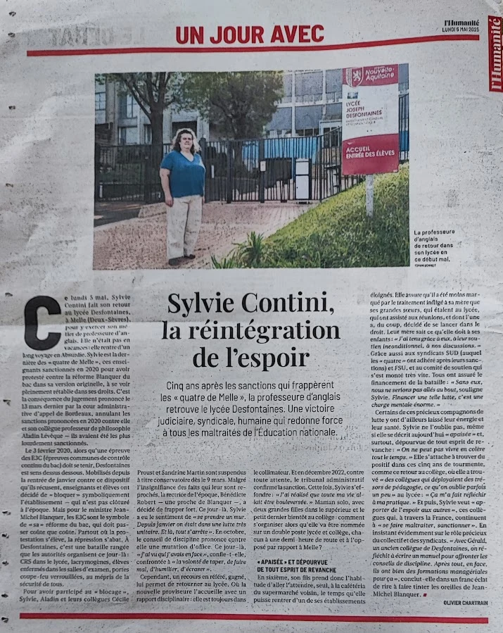

Revue de presse
À Melle, Sylvie Contini retrouve le lycée Desfontaines
Date indiquée par Facebook · 5 mai 2025
Repères éditoriaux
L’Humanité revient sur la réintégration de Sylvie Contini, professeure d’anglais au lycée Desfontaines de Melle, cinq ans après les sanctions visant les « quatre de Melle ».
Texte conservé avec la publication
https://www.humanite.fr/societe/education-nationale/apporter-de-lespoir-a-ceux-qui-se-font-maltraiter-et-sanctionner-sylvie-contini-la-professeure-danglais-qui-a-fait-plier-blanquer-reintegree
#deuxsevres #melle #lhumanite

Sources
Archive rouge · export Facebook · AR-0002-FB-01128
À lire aussi · Coupes budgétaires : le sacrifice de la recherche et l’enseignement supérieur public · Le lien d’origine